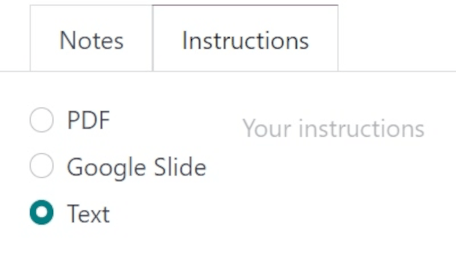
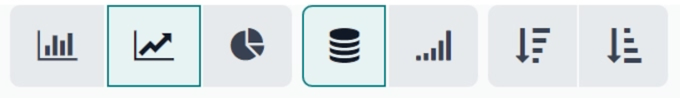
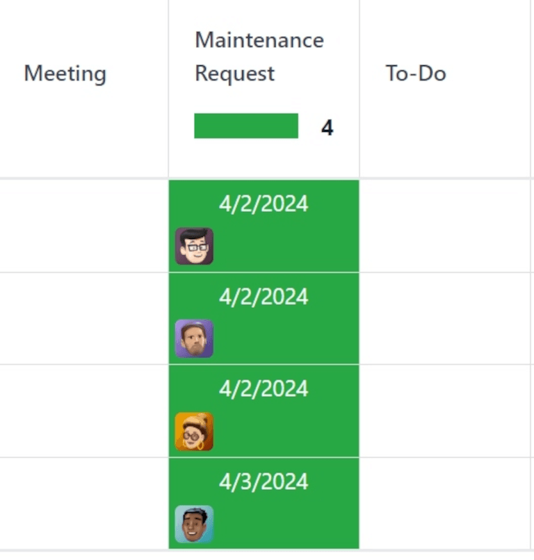
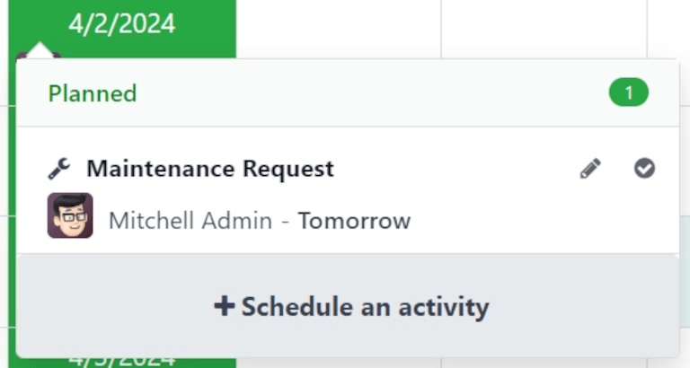

维护日历¶
要避免仓库工作中心的设备故障和堵塞，就必须对设备进行持续维护。对意外损坏的机器和工具进行及时的纠正性维护，以及进行预防性维护以确保避免此类问题，是保持仓库业务顺利进行的关键。
在 Odoo 维护 中，用户可以访问 维护日历 来创建、安排和编辑纠正性和预防性维护请求，以便随时了解设备和工作中心的情况。
创建维护请求¶
可直接从*维护日历*创建维护请求。要访问日历，请导航至 。
要创建新请求，请点击日历上的任意位置。此操作将打开一个 新活动 弹出窗口。在 名称： 字段中，为新请求指定一个标题。

点击弹出窗口中的 创建 将保存新请求，不提供其他详细信息。如果要取消创建请求，请点击 取消。
要添加更多细节并将请求安排到特定日期和时间，请点击 编辑。
点击 编辑 会打开一个空白的维护申请表，在这里可以填写有关申请的各种详细信息。
编辑维护请求¶
在 请求 字段中，为新请求指定一个标题。在 创建者 字段中，从下拉菜单中选择创建请求的用户。默认情况下，该字段将显示实际创建请求的用户。

在 For 字段，从下拉菜单中选择该请求是为 设备 还是 工作中心 创建的。
注解
如果在 For 字段的下拉菜单中选择了 工作中心，则表单上会出现两个附加字段：工作中心`和 :guilabel:`封锁工作中心。
在 工作中心 字段中，选择此维护请求适用于仓库中的哪个工作中心。
如果勾选了 封锁工作中心 选项的复选框，则在执行此请求期间，无法在此工作中心计划工单或其他维护请求。
如果在 For 字段中选择了 设备`（默认情况），则从 :guilabel:`设备 字段中选择需要维护的机器或工具。选择特定设备后，会出现一个灰色的 类别 字段，列出该设备所属的 设备类别。
在 工作表模板 字段中，如有必要，点击下拉菜单选择工作表模板。这些模板是自定义模板，可由执行维护的员工填写。
在 类别 字段下，请求日期 字段显示请求进行维护的日期。
维护类型`字段提供两个可选单选按钮选项：:guilabel:`纠正`和 :guilabel:`预防。
:guilabel:`纠正`维护是为满足即时需求而提出的请求，如设备损坏，而 :guilabel:`预防`维护则是为避免将来发生故障而提出的计划请求。
如果该请求与特定的 MO 绑定，请从 制造订单 字段中选择该 MO。
从 团队 字段的下拉菜单中，选择执行维护的所需维护团队。在 负责人 字段中，选择负责该请求的技术人员。
在 预定日期 字段中，点击日期以打开日历弹出窗口。在弹出窗口中选择计划维护日期，然后点击 应用 保存日期。
在 持续时间 字段中，输入计划维护的小时数（格式为 00:00）。
在 优先级 字段中，在一到三颗 ⭐⭐⭐ （星） 之间选择一个优先级。这表示维护请求的重要性。
如果在多公司环境中工作，请从 公司 字段的下拉菜单中选择此维护请求所属的公司。
表格底部有两个标签：备注 和 说明。
必要时，在 备注 选项卡中键入分配给申请的团队或技术人员的内部说明。
在 说明 选项卡中，如有必要，从三个单选按钮选项中选择一个，以向指定的团队或技术人员提供维护说明。提供说明的可用方法有 PDF、Google 幻灯片`或 :guilabel:`文本。
日历要素¶
*维护日历*提供各种视图、搜索功能和筛选器，帮助跟踪正在进行的和计划中的维护请求的进度。
以下各节将介绍日历各视图中的元素。
筛选器和收藏¶
要访问维护日历，请导航至 。
要在*维护日历*上添加或删除用于排序数据的筛选器，请单击页面顶部搜索栏右侧的 🔻（向下三角形） 图标。
下拉菜单的左侧列出了用户可以选择的所有不同 筛选 方法。默认情况下，待办事项 和 激活 被选中，因此会显示所有打开的请求。
小技巧
要在 维护日历 中添加自定义筛选器，请点击下拉菜单中 筛选 部分下的 添加自定义筛选器。这将打开一个 添加自定义筛选器 弹出窗口。
在弹出的窗口中，配置筛选器新规则的属性。准备就绪后，点击 添加。
下拉菜单的右侧列出了 收藏 或任何已保存为收藏夹以便日后再次访问的搜索。
要保存新的 收藏 搜索，请选择所需的 筛选器。然后，点击 保存当前搜索。在:guilabel:`保存当前搜索`正下方的字段中，为搜索指定一个名称。
在指定名称下有两个选项，可将当前搜索保存为 默认筛选器 或 共享 筛选器。
选择 默认筛选器 会将此筛选器设置为打开此日历视图时的默认筛选器。
选择 共享 筛选器后，其他用户也可使用该筛选器。
准备就绪后，点击 保存。点击后，新的 收藏 筛选器会出现在 收藏 列中，搜索栏中会出现一个带有筛选器名称的 :guilabel:`⭐ （金星）`图标。
查看¶
维护日历 有六种不同的视图：日历`（默认）、:guilabel:`看板、列表、透视、图表 和:guilabel:活动。
日历视图¶
打开 维护日历 时显示的默认视图是 日历。该视图类型有许多选项，用于对维护请求信息进行排序和分组。
页面左上角有一个下拉菜单，默认设置为 周。点击该下拉菜单可显示可查看日历的不同时间段：日、月`和:guilabel:`年。还有一个 显示周末 选项，默认为选中。如果未选择，日历上将不显示周末。

菜单左侧有一个 ⬅️（左箭头） 图标和一个 ➡️（右箭头） 图标。点击这些箭头可分别向前或向后移动日历。
默认情况下，设置为 周 的下拉菜单右侧有一个 今天 按钮。点击该按钮后，日历将重置为查看今天的日期，无论点击前查看的是哪个时间点。
页面最右侧有一个侧边栏，其中包含一个设置为今天日期的最小化日历，以及一个 技术人员 列表，显示当前打开请求的所有 技术人员。点击侧边栏顶部的 (panel) 图标可打开或关闭侧边栏。
注解
只有当技术人员被指派处理未结申请时，才会显示 技术人员 列表；只有当单个技术人员在至少 一个 维护申请表中被列为 负责人 时，才会显示 技术人员 列表。
看板视图¶
使用 看板 视图，所有打开的维护请求都会按照各自的维护流程阶段显示在看板风格的列中。
每个维护请求都显示在自己的任务卡上，每个任务卡都可以拖放到看板管道的不同阶段。
每一列都有一个名称（例如 进行中）。鼠标悬停在一列的顶部，会显示一个 ⚙️（齿轮） 图标。点击 ⚙️（齿轮）`图标会显示该列的选项列表：:guilabel:`折叠、编辑、自动`和:guilabel:`删除。
点击 折叠 可以折叠列，隐藏其内容。
点击 编辑 会弹出 :guilabel:`编辑：（阶段名）`窗口，并显示相应的阶段名，在此可以编辑列的详细信息。以下是可以编辑的列选项：

guilabel:
名称：看板管道中的阶段名称。在维护管道中折叠：选中时，此阶段的列默认在 看板 视图类型中折叠。
请求已确认：如果未勾选该复选框，且维护请求类型设置为*工作中心*，则在创建维护请求时不会为相应的工作中心创建休假。如果勾选了该复选框，工作中心将在指定日期或尽快（如果工作中心不可用）在列出的期限内自动关闭。
顺序：该阶段在维护过程中出现的顺序。
请求已完成：如果勾选，则表示此阶段是维护流程的最后一步。转到此阶段的请求将被关闭。
准备就绪后，点击 保存并关闭。如果没有更改，请点击 废弃，或点击 X 图标关闭弹出窗口。
列表视图¶
选择 列表 视图后，所有打开的维护请求都会显示在列表中，每个请求的相关信息都会列在相应的行中。
该视图类型显示的信息列如下：
主题：为维护请求指定的名称。
员工：最初创建维护请求的员工。
技术人员：负责维护请求的技术人员。
类别：被修理设备所属的类别。
阶段：请求当前所处的维护流程阶段。
公司：如果在多公司环境中，则指请求分配给数据库中的公司。
数据透视视图¶
选择 透视 视图后，维护请求将显示在透视表中，并可自定义显示不同的数据指标。
要在数据透视表中添加更多数据，请点击 衡量 按钮以显示下拉菜单。默认情况下，选择 数量。可添加到表格的其他选项有 提前计划的其他休假、持续时间 和 每次重复。
在 衡量 按钮的右侧是 插入电子表格 按钮。点击该按钮会弹出一个窗口，标题为 选择电子表格以插入透视表。
弹出窗口中有两个选项卡：电子表格 和 仪表板。点击其中一个选项卡，然后在数据库中选择电子表格或仪表板，将此透视表添加到其中。准备就绪后，点击:guilabel:确认。如果该表不应添加到电子表格或仪表板，请点击 取消，或点击 X 图标关闭弹出窗口。
在 插入电子表格 按钮的右侧有三个按钮：
翻转轴：翻转数据透视表的 X 轴和 Y 轴。
全部展开：透视数据表的所有可用行和列全部展开。
下载 xlsx：数据透视表将下载为 .xlsx 文件。
图形视图¶
选择图表视图后，搜索栏和数据可视化表示之间会出现以下选项。这些特定于图表的选项位于 计量方式 和 插入电子表格 按钮的右侧。
有三种不同类型的图表可供用户查看数据：
柱状图：以柱状图显示数据。
折线图：以折线图显示数据。
饼状图：以饼状图显示数据。
以 饼状图 形式查看数据时，数据可以按以下方式格式化：
堆叠图：数据堆叠在图表上。
降序：按降序显示数据。
升序：按升序显示数据。
以 折线图 图表形式查看数据时，数据可以按以下方式格式化：
堆叠图：数据堆叠在图表上。
累积：数据不断累积。
降序：按降序显示数据。
升序：按升序显示数据。
以 饼状图 图表形式查看数据时，默认显示所有相关数据，且不提供其他格式化选项。
活动视图¶
选择 活动 视图后，所有打开的维护请求都会列在各自的行中，并可安排与这些请求相关的活动。
维护请求作为活动列在 维护请求 栏中。点击一个请求会打开一个 维护请求 弹出窗口，显示请求的状态和负责的技术人员。要直接从弹出窗口安排活动，请单击 :guilabel:` ➕ 安排活动`。这将打开一个 计划活动 弹出窗口。
在弹出窗口中选择 活动类型，提供 摘要，安排 截止日期，并在 :guilabel:`指派给`字段中选择负责用户。
在灰色的 :guilabel:`记录备注…`字段下的空白处输入新活动的附加说明。点击后，该栏将变为 :guilabel:`输入“/” 指令。
准备就绪后，点击 计划，以计划活动。或者，点击 计划并标记为已完成 关闭活动，点击 已完成并计划下一个 关闭活动并打开新活动，或点击 取消，以取消活动。
选择 活动 视图后，在安排活动时可用的每种活动类型都会作为自己的列列出。这些列是 Email, 电话、会议、维护请求、 待办事项、上传文档、请求签名 和 许可批准。
要安排特定活动类型的活动，请点击所需维护请求对应行的任意空白框，然后点击 ➕（加号）`图标。将打开一个 :guilabel:`Odoo 弹出窗口，可在其中安排活动。